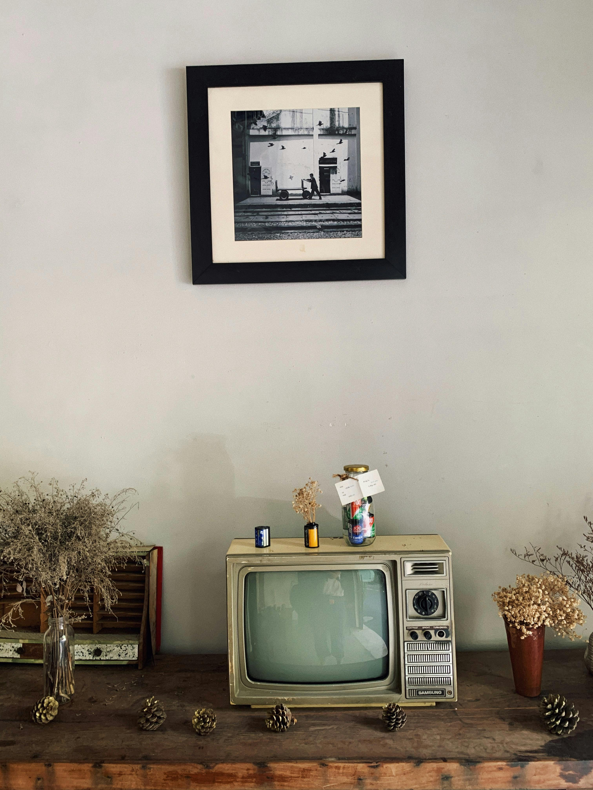

Television is based on a highly sophisticated science of vision and sound. A man can see as far the horizon. He hears as far as the sound is audible to him. But television takes his vision to a place far beyond his horizon. He sees a thing or person long beyond his actual physical reach. It brings to him also sound from a very remote place. In fact, television brings vision and sound together from a distance which is beyond the range of human sight and hearing. It is a powerful and very useful invention of modern science. It has conquered space for human eye-sight. It has brought about a great development in the science of communication. It can well be used for entertainment and knowledge.

Click on a TV type below to jump to its detailed section.
LED TV

LED TVs use light-emitting diodes for backlighting the display, offering better brightness and energy efficiency than older LCDs. This technology allows for thinner panels, better color accuracy, and improved contrast ratios.
LED TVs have become the standard for home entertainment, offering a balance between cost and performance. They come in various sizes and resolutions, suitable for most budgets.
OLED TV

OLED TVs use organic light-emitting diodes that emit their own light, which enables perfect blacks and incredible contrast ratios. This technology provides superior picture quality, wider viewing angles, and vibrant colors.
OLED screens are ultra-thin and flexible, allowing innovative designs. Though generally more expensive, OLED TVs are favored by enthusiasts for their premium display quality.
QLED TV

QLED TVs feature a quantum dot layer that enhances color and brightness, combined with LED backlighting technology. Mainly promoted by Samsung, QLED TVs offer vivid colors and high brightness ideal for bright room viewing.
These TVs bridge the gap between standard LED and OLED technology, delivering excellent picture quality with some advantages in durability and brightness.
Smart TV

Smart TVs connect to the internet and offer streaming services, apps, web browsing, and interactive features beyond traditional television viewing. They transform TVs into multimedia hubs.
Operating systems vary by brand, including Roku, Android TV, Tizen, and webOS, providing a wide ecosystem of applications and services.
4K TV

4K TVs offer a resolution of 3840 x 2160 pixels, delivering four times the detail of Full HD. This higher resolution results in sharper images and more immersive viewing experiences, especially on larger screens.
4K content is widely available from streaming platforms, Blu-ray discs, and gaming consoles, making these TVs a popular choice for modern entertainment.
8K TV

8K TVs offer a stunning resolution of 7680 x 4320 pixels, providing extreme detail and clarity. While content in native 8K remains limited, these TVs future-proof home entertainment setups.
Their high pixel density enhances large screen viewing, making them suitable for cinephiles and professional environments.